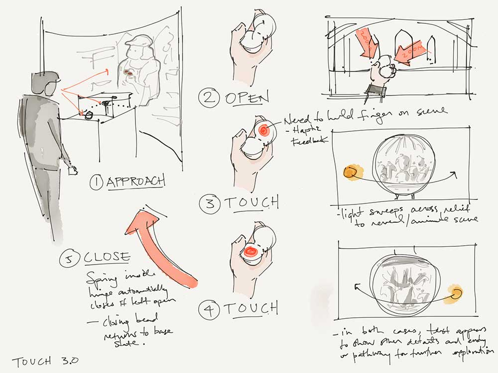

Architect Eliel Saarinen famously said on the design of architectural spaces, "Always design a thing by considering it in its next larger context: a chair in a room, a room in a house, a house in an environment, an environment in a city plan." In general, this concept has yet to clarify within a digital age. We’ve largely explored how “digital” enables us to build more freely, more complex and more efficiently, but the experiences that intersect virtual space are rarely spoken of within the context of the physical world. The experience of the digital world is seldom reflected in the physical design of spaces.

This major research looked at the application of physical/digital co-design into an architectural mindset, placing thinking on a "digital urbanism" into context with the design of a prototype museum exhibit –– where digital media and exhibit design are considered equally as materials on which to constrct the framework for an experience. The prototypes converse between digital projection, sensory materials, and the physical exhibit that encloses it; all in the effort to simply create an interactive storytelling experience. Further, the implementation of such prototype was situated within the considerations of the museum and its resources, both human and organizational. Overall, this thesis posited that ‘Form Follows Narrative’ –– whether digital or physical.
In 2016, the project and co-authored papers were presented, through the Synaesthetic Media Lab at Ryerson and Georgia Tech, at TEI'16 (Eindhoven, NL), MWXX (Los Angeles, US), and DIS'16 (Brisbane, AU).
"Sensing History: Contextualizing Artifacts with Sensory Interactions and Narrative Design" (DIS, 2016) - Co-Authored Paper / Demo
"Sensing context: Reflexive Design Principles for Intersensory Museum Interactions" (Museums and the Web, 2016) - Co-Authored Paper / Presentation
"Grasping Cultural Context through Multisensory Interactions" (TEI Work-in-Progress, 2016) - Co-Authored Paper / Demo